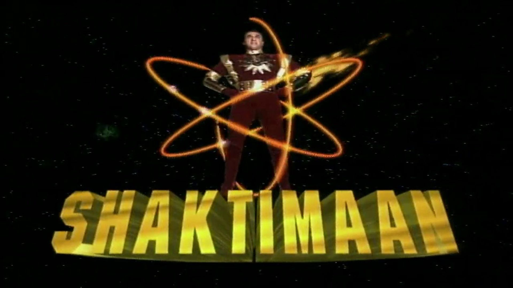

Shaktimaan has superhuman powers that lie inside his body in his seven chakras of Kundalini attained through meditation. Shaktimaan worships God through the symbol Om. Truthfulness is his motto. He can even separate his body into five different bodies of fire, wind, water, earth, and sky. He is an expert, skilled and intelligent fighter and has fought with super-skilled enemies. He possesses physical powers like unlimited speed (up to the speed of light), strength, durability as well as psychic powers like telepathy, teleportation, telekinesis, etc.
Although he possesses godlike powers, his only weakness is a crystal (Papmani) possessed by Tamraj Kilvish which can be used to defeat and even kill him. This makes him powerless because it is filled with the evil of the world and is the source of the black powers. But he regains his strength after the crystal is taken away from him. He can be killed if the crystal is placed in front of him and he is treated violently to the verge of death.
